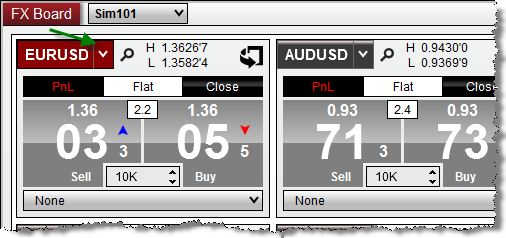
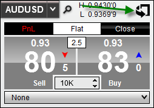
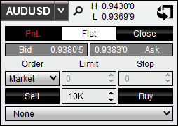
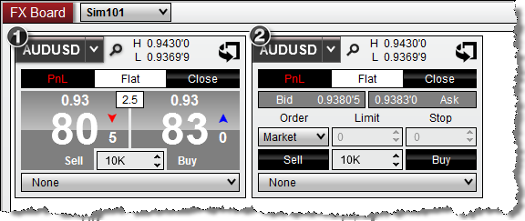

|
<< Click to Display Table of Contents >> Working with Instrument Tiles |


|
Working with Instrument Tiles
|
<< Click to Display Table of Contents >> Working with Instrument Tiles |
|
The FX Board can be setup for use with an unlimited number of Forex or CFD instrument tiles which are used to display current market data, as well as used for order entry.
Adding an Individual InstrumentYou can add as many individual Forex or CFD instrument tiles to your FX Board window as you would like. •Press down on your right mouse button in the FX Board window and select the menu item Add Instrument(s). Through the Instrument Selector menu, you can navigate through various instrument lists to locate the instrument you desire, and left click on the instrument to add the individual instrument to the FX Board. Adding a List of InstrumentsYou can also rapidly add an entire list of predefined instruments to the FX Board window.
•Press down on your right mouse button in the FX Board window and select the menu item Add Instrument List. Then select the instrument list you would like to add to the FX Board.
Please see the Instrument Lists section of the user help guide for additional information on creating, editing, and deleting instrument lists.
Changing InstrumentsOnce an instrument tile has been added to the FX Board display, you can quickly change the instrument by using the Instrument Selector.

Arranging TilesYou can customize the arrangement in which each instrument tile is displayed by left clicking and dragging the instrument tile to the desired location.
Removing InstrumentsTo remove an instrument tile, simply right click on the desired tile and select Remove Tile. |
 Creating instrument lists from the FX Board
Creating instrument lists from the FX Board
Creating an Instrument ListIf you have a FX Board setup with a number of different instruments you would like to save for later, you can quickly add the entire display of instruments into an Instrument List for quick access.
•Press down on your right mouse button in the FX Board window and select the menu item Create Instrument List, then give the Instrument List a unique name and press OK.
You will now be able to access this list from other features of NinjaTrader using the Instrument Selector. You can further edit this list by using the Instrument Lists window |
 Flipping tiles for custom order entry
Flipping tiles for custom order entry
Flipping TilesEach instrument tile located on the FX Board display has a reverse side which can be flipped over allowing for custom order entry. To flip a tile, simply click the icon on the top right corner of the instrument tile.


Tip: It is possible to add two tiles of the same instrument, allowing you to display the
 |
Tile sizeYou can optionally reduce, or increase the size of the instrument tiles displayed in the FX Board window by choosing one of 3 preset options.
To change the size of the instrument tiles:
•Right click on the FX Board window, select Properties, locate the Tile size property and select: Small, Medium, or Large
Disabling Quick Order EntryBy default, Sell and Buy buttons of each instrument tile will act as a order entry feature to quickly submit and execute market orders. However, this feature can be disabled which will allow you to only use the front of the instrument tile for market data and position display.
To disable Quick Order Entry, right click on the FX Board and uncheck Quick Order Entry. When a new tick is received on an instrument, the Sell or Buy button of an instrument tile will highlight to represent the direction of the current tick. The default duration for this highlight is 1000ms, or 1 second. The FX Board will allow you increase, or decrease the amount of time the tile will remain highlighted to your preferences.
To configure this property: •Right click on the FX Board window, select Properties, locate the Highlight duration (ms) property and input a custom value (in milliseconds).
The higher the value used, the longer the tile will remained highlighted. Setting the highlight duration to a value of "0" (zero) will disable highlighting all together.
Market Data Display TextInstrument tiles will display the current daily high/low value for the selected instrument as determined by your data provider. However, this text can be changed to display the amount of time since last tick, or the text can disabled completely.
To configure this setting:
•Right click on the FX Board window, select Properties, locate the Display property, and choose from one of the following display options in the table below
For further customization of the FX Board window, please see the FX Board Properties topic. |